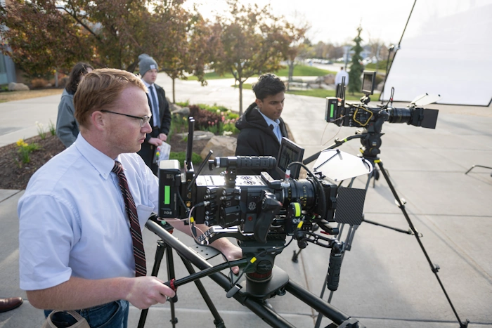
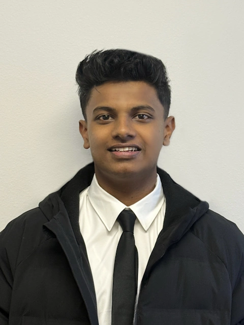

Stories worth telling.
Numbers to back them up.
I'm Ruthwik, a filmmaker and Data Science student who directs, shoots, and edits video, and builds the data projects behind it.

Two sides, one storyteller

I'm a Data Science major with a Communication minor at BYU-Idaho in Rexburg, Idaho, with a 3.9 GPA and an expected graduation in April 2029. As a Creative Producer in Media Creation, I direct and shoot videos for campus, lead the direction team, and train 12 to 15 Production Assistants. So far I've made 50 to 60 videos for campus departments, including a commercial airing on streaming platforms and the "Golden Nuggets" faculty retirement series. Outside of work I've directed and edited three award-winning short films, and I write code in Python and C++. Before college I served as Student Council President and worked as an assistant on-site project manager, so I know how to carry a project from idea to delivery.

Films & Video
Award-winning short films, campus commercials, and the Golden Nuggets series.
Explore my films
Data & Code
SQL databases, data modeling, and code projects built to organize information clearly.
Explore my data workRecognized for the work
- Best Film 2024 (Ankura Fest)
- Best Screenplay (Equinox Fest)
- Best Sound Design (Artemis Festival)
Let's work together
Have a project, a role, or an idea? Send me a message and I'll get back to you.